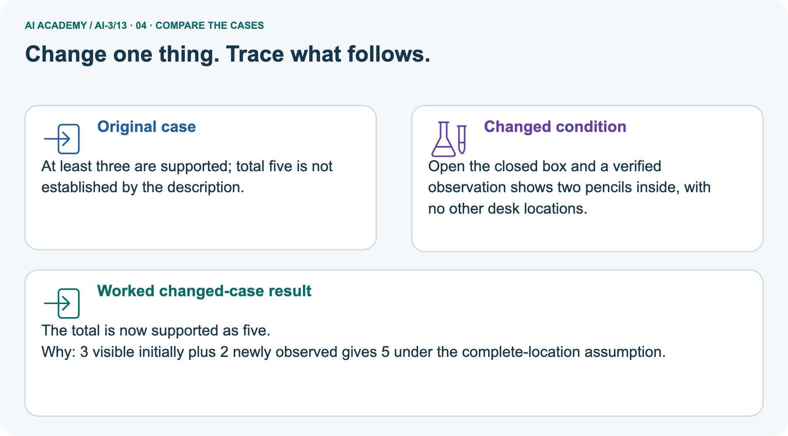
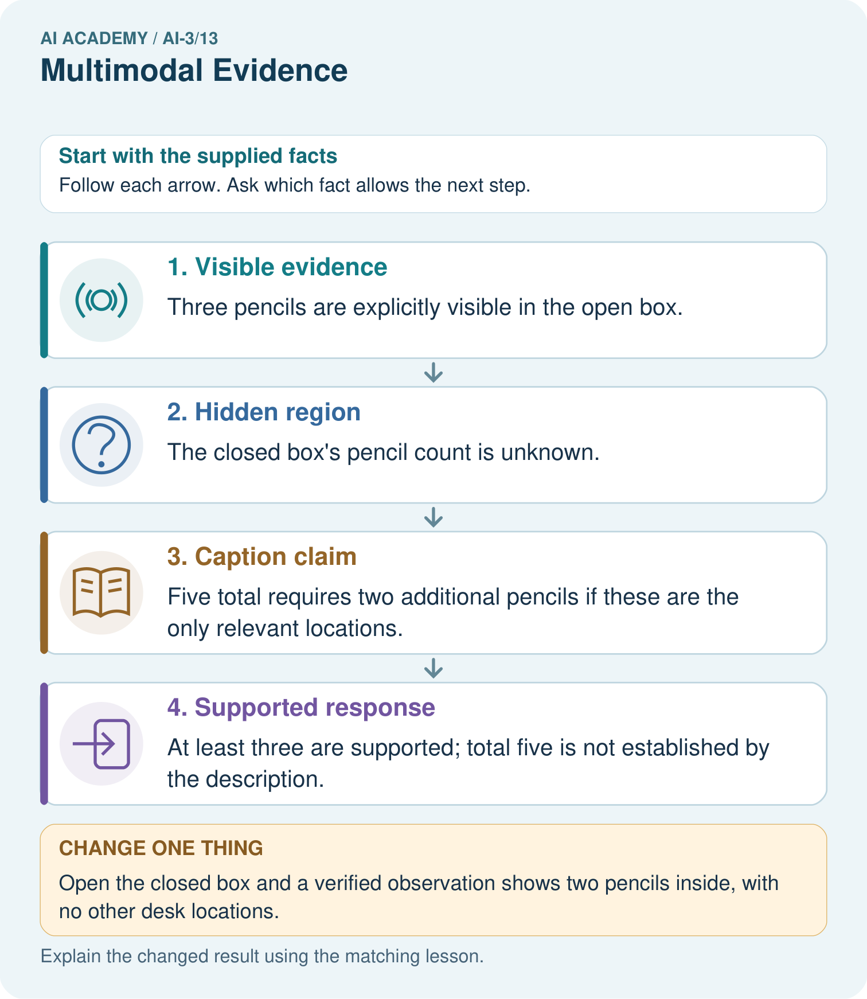
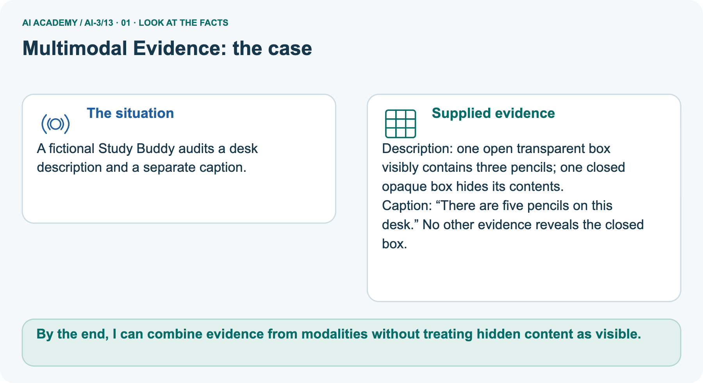
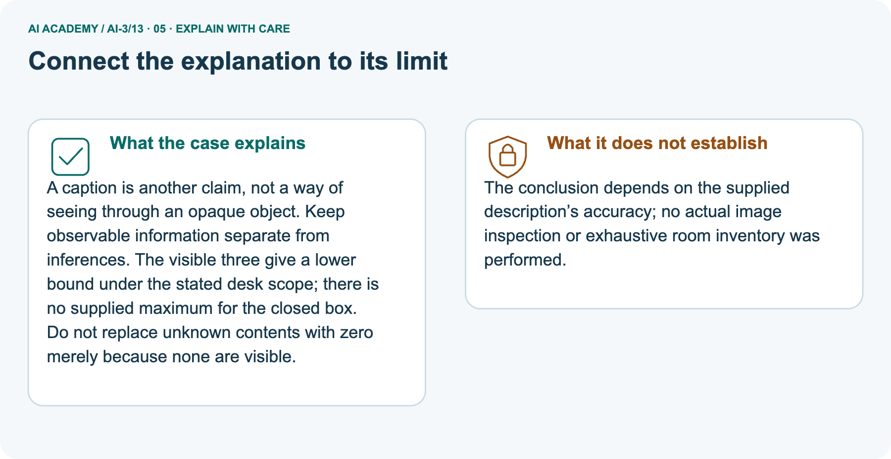
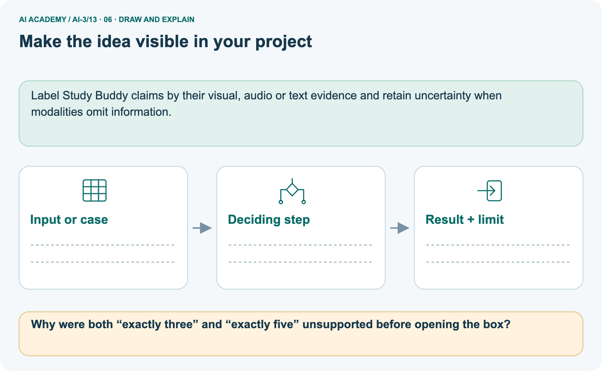

AI Academy · Level 3 · Grade 8 · Week 13 · Student lesson
Multimodal Evidence
Learn to understand, design, build, test and explain AI systems responsibly.
Project: Verified Study Buddy
THE CONNECTED WEEK
Align the sources. Separate the claims. Preserve the unknown.
Combine multimodal evidence without treating hidden contents or captions as verified observations.
Keep one habit: Alignment checklist → visible/hidden desk case → four evidence pairs → lower bounds → independent plants.
Main lesson · Section 1
What is seen, what is claimed, and what remains hidden?
Combine aligned evidence without replacing unknown contents with zero.
Your current evidence-combination goals
I can keep visible evidence, hidden contents and caption claims separate.
I can check source identity, time and scope before combining modalities.
I can state supported lower bounds and unresolved conflicts without inventing missing content.
Recall representations and source scope
Close your notes first. A rough first answer helps us choose the right starting point; it is not a score for your ability.
Recall Image Generation Models and Speech and Audio Systems: a representation or fluent output is not automatically an observation. Name the source and state what it actually makes available.
Your end goal
By the end, I can combine evidence from modalities without treating hidden content as visible.
Earlier wording, alternatives and picture transcripts
Your learning target
Remember before reading
Without opening the old lesson, explain one key idea from Speech and Audio Systems. Give an example and a mistake that the idea helps you avoid.
Without opening the old lesson, explain one key idea from Image Generation Models. Give an example and a mistake that the idea helps you avoid.
Without opening the old lesson, explain one key idea from Iterative Prompting. Give an example and a mistake that the idea helps you avoid.
After trying, check the relevant lesson or ask your teacher. Change the part of your explanation that the evidence shows was wrong.
Week 13: Multimodal Evidence
Multiple modalities help only when their information is aligned and relevant.

CREATOR MISSION
Design a plant helper using image plus question text.
Creator name and date:
Readiness for the connected explanation
This week’s end goal
Main lesson · Section 2
Give each source a job and a limit
The task supplies both the desk description and the caption claim.
Modality, alignment and claim roles
A modality is a form of information such as image, audio or text. Combining modalities is useful only when the sources concern the same entity, relevant time and question. Keep each source’s direct content separate from interpretations. A caption that says five pencils is a claim; it cannot make the contents of an opaque box visible.
The complete visible/hidden desk contract
Main supplied desk description: an open transparent box visibly contains three pencils; a closed opaque box hides its contents. Caption: There are five pencils on this desk. No other evidence reveals the closed box. The description supports at least three pencils, but neither exactly three nor exactly five. No numerical upper bound is supplied for the hidden contents.
These are classroom descriptions, not an actual image inspection.
Earlier wording, alternatives and picture transcripts
PICTURE STORY
Notice → Predict → Explain
Begin with visible evidence. Do not explain more than the picture and information support.
MYSTERY
The learners must use multimodal evidence to solve a problem. What information do they have? What decision or calculation do they make? What would count as evidence that it worked?
Three observations (what you can point to):
My prediction and the clue supporting it:
A closer explanation
A multimodal pipeline may transcribe speech, inspect an image and generate a response. Errors at one stage can propagate even when later stages run correctly.
Begin by writing the question the procedure is intended to answer. Identify the information already supplied, the information it will produce and the information still missing.
These are constructed classroom examples; they do not require live accounts, private records or an external service. Do not treat a plausible explanation as a measured outcome.
Main lesson · Section 3
Check alignment before combining claims
More sources do not help if they refer to different things.
The complete evidence-combination checklist
| Evidence question | What to record |
|---|---|
| Identity | Do picture, caption and question concern the same object or event? |
| Time and scope | Do they describe the same occasion, frame and counted locations? |
| Direct content | What does each supplied source explicitly report? |
| Hidden or missing | What cannot be seen or is not supplied? |
| Supported claim | What follows without treating a caption as a new observation? |
Explain the deciding evidence
Point to the input, the deciding step and the result in this week’s visual. Explain the same step in ordinary words. A picture helps when you can say what each part represents.
Review · Earlier speech-stage record guidance
Track source modality, segment/time references, transcription, interpretation and final claims separately. Compare conflicting evidence without assuming one modality always wins.
Ask for clarification when the task needs unresolved information.
Before applying the procedure, write its units, denominator or decision boundary where relevant. A partner should be able to repeat each step using the same inputs.
If a required input is absent or violates the stated contract, record that condition explicitly instead of quietly replacing it with a convenient value.
Earlier wording, alternatives and picture transcripts
VISUAL MECHANISM
Input → Process → Output
Trace the information. At each stage, ask what changed and how you could test it.

↓

↓

Which stage could fail even when the other two are correct? Explain:
A closer explanation
Speech pipelines and multimodal evidence — evidence trace
Connect the picture and the explanation
Main lesson · Section 4
Compare visible evidence, hidden regions and caption claims
Absence from view is different from confirmed absence.
Four pictures with a purpose

Normal case: predict the result and deciding evidence.

Boundary case: identify the exact limit.

Missing information: name what must be clarified.

Transfer case: explain which procedure still applies.
Choose a revealing case
Which case is most likely to reveal a hidden assumption? Why?
Predict the supplied changed case
Change: Open the closed box and a verified observation shows two pencils inside, with no other desk locations.
Check after predicting
Prediction: The total is now supported as five.
Reason: 3 visible initially plus 2 newly observed gives 5 under the complete-location assumption.
Earlier wording, alternatives and picture transcripts
CASE GALLERY
Four Tests, Four Kinds of Evidence
A system is not understood until it survives more than one comfortable example.
NORMAL CASE: predict and name evidence. BOUNDARY CASE: predict and name evidence.
MISSING INFORMATION: predict and name evidence. TRANSFER CASE: predict and name evidence.
Change one thing in the pictured case
Main lesson · Section 6
Trace the lower bound without inventing the total
A later verified observation changes the evidence, not the meaning of unknown.
Read the complete pictured desk description and caption
A fictional Study Buddy audits a desk description and a separate caption.
Description: one open transparent box visibly contains three pencils; one closed opaque box hides its contents.
Caption: “There are five pencils on this desk.” No other evidence reveals the closed box.
Trace visible, hidden and claimed quantities


Read the picture one step at a time
A caption is another claim, not a way of seeing through an opaque object. Keep observable information separate from inferences.
The visible three give a lower bound under the stated desk scope; there is no supplied maximum for the closed box. Do not replace unknown contents with zero merely because none are visible.
Predict opening the box under a complete-location scope
Change one thing: Open the closed box and a verified observation shows two pencils inside, with no other desk locations. Predict the result before checking the explanation. What remains the same?
Check after predicting



Explain why both exact totals were initially unsupported
The conclusion depends on the supplied description’s accuracy; no actual image inspection or exhaustive room inventory was performed.
Read the labelled picture: Why were both “exactly three” and “exactly five” unsupported before opening the box?
Review · Separate unavailable-audio conflict
Audio transcript reads fifteen boxes; a clear written inventory says fifty boxes. The original audio is unavailable and the assistant reports fifteen as certain.
There is an unresolved quantity conflict and no audio replay. Preserve both sources and ask the responsible person; certainty is unsupported.
Earlier wording, alternatives and picture transcripts
WORKED EVIDENCE
Reason Step by Step
Predict first. Then check each step. A correct answer without visible reasoning is incomplete evidence.

1. Image shows leaf spots; text asks about watering history.
2. Each modality supplies different relevant evidence.
3. If photo and caption describe different plants, fusion is unsafe.
4. Check alignment, source, and uncertainty before combining.
Recalculate, retrace, or restate the reasoning in your own representation:
CHECK Did the evidence answer the exact question? Did the total, path, or source record stay consistent?
A closer explanation
Compare the intermediate evidence with the final statement. Explain why each number or decision follows from the stated inputs.
The conclusion belongs to this scenario and procedure; changing the inputs, evaluation population or authority can change what it establishes. Retain the raw record so a later revision can be compared honestly.
Learn from the worked case
Cover the result before checking it. Say what is given, choose the procedure, and follow one step at a time. Then uncover the result and explain your first mismatch. Ask why a step is allowed, not only what number it produces.
A pictorial worked case: Multimodal Evidence
The facts we will use



Why this result follows
What this example does not establish
Main lesson · Section 7
Find an invented zero or an invented total
Keep the lower bound and the unavailable quantity separate.
Repair the hidden-means-empty argument
Claim to repair: No pencils are visible in the closed box, so it contains zero and the desk total is exactly three. Opaque means its contents are not supplied by the view, not that it is empty. The supported count is at least three. The caption’s five is also unverified, not automatically disproved: it would need two more pencils if the two boxes were the only relevant locations.
State any location assumption explicitly.
Propose the evidence needed to revise the answer
Earlier wording, alternatives and picture transcripts
ERROR DETECTIVE
Compare → Diagnose → Repair
Do not patch the answer. Find the earliest unsupported assumption, wrong step, or weak evidence.

| Evidence record | Expected | Actual | Likely cause / next test |
|---|---|---|---|
| normal case | works | ||
| boundary case | stated rule | ||
| missing input | safe response | ||
| fresh transfer | generalizes |
Repair one cause. Why is this repair better than changing several things?
A closer explanation
Complete the supported workbook tasks before attempting W4 independently. Record any hints or help used. After feedback, use the teacher's fresh retry rather than copying the earlier answer.
For a project, select a relevant new case, predict the outcome from the declared rule and preserve the result alongside any revision.
Main lesson · Section 8
Practise the visible/hidden distinction with less help
Record when new evidence becomes available.
Current supported task and response
From the supplied desk description and caption, separate direct reported observations, unknown contents and unverified claims. Explain why the supported count is a lower bound rather than an exact total. Then use the supplied changed case: opening the box reveals two pencils and there are no other desk locations.
Explain the pictured uncertainty
Why were both “exactly three” and “exactly five” unsupported before opening the box?
Explain the picture
Keep independent work separate
This is supported practice. Keep the separately named independent case for an attempt before feedback.
Review · Earlier speech/conflict practice
A stage-level accuracy or authority policy does not establish every modality agrees or every downstream claim is supported.
Practise with less help: Trace the worked case
Use workbook W2 for the connected example “Speech pipelines and multimodal evidence”. First fill the input and rule boxes. Try the middle steps before asking for a hint. After a hint, try the next step yourself.
| Plan | Do | Check |
|---|---|---|
| What is given? Which rule or procedure applies? | Record each intermediate step. | Does the result follow? What remains unknown? |
Check your reasoning
Use the worked case for Speech pipelines and multimodal evidence. Proposed explanation: “The worked result establishes every future case”. Decide whether this explanation is supported.
Point to the step or supplied fact that decides; explain your repair if needed.
Answer on your own before discussion. If you are unsure, say which step you need help with.
Earlier wording, alternatives and picture transcripts
LOGIC STUDIO
Specify Before You Run
Prompts, schemas, retrieval, tool calls, and code are inspectable parts of one AI product.

SET task, audience, constraints, output_schema LOAD approved_context or retrieval_result CALL model or allowed_tool VALIDATE fields, claims, citations, and safety IF evidence missing: ask, retrieve, or abstain RETURN useful output + source trail + limitations
Trace one input. Which line changes the state or chooses a path?
A closer explanation
A useful check asks what would make the reasoning fail. Distinguish a failure to execute the declared procedure from a weakness in the procedure itself.
The first may require a correction; the second requires an explicitly revised method and new evidence. Preserve unsuccessful cases so an improved result cannot hide the original problem.
Explain your trace to a partner. Your partner points to one step to check. Swap roles on the next case. Each person writes their own explanation.
Main lesson · Section 9
Audit four complete image/text evidence pairs
Check alignment and relevance before merging the reports.
The supplied evidence-pair cards
| Card | Complete supplied evidence and question | Alignment or evidence issue |
|---|---|---|
| A · DeskD1 | Same occasion: described open box has three visible pencils; closed box contents unknown; caption says five total. Ask desk total. | Visible lower bound versus unobserved contents |
| B · Plants | Photo description concerns plant P2; caption says plant P1 was watered Monday. Ask P2 watering history. | Different identities;do not transfer the history |
| C · ChartC1 | Same dated full-frame plant chart is described as12plants; caption for C1 says21; no authority rule. Ask the count. | Conflicting reports under the stated same scope |
| D · PlantP4 | Same plant and date: photo description reports leaf spots; question asks last week’s watering; no history record is supplied. | Visible appearance does not supply the requested history |
Separate reports, missing facts and bounded answers
Four complete evidence-pair audits: for each name the object/event ID, time/scope, direct reported content, missing information and a bounded answer. A supports at least3,not exact5; B cannot apply P1’s history to P2; C requires preserving the12/21conflict and checking the original chart/source; D needs a history record or clarification. Do not infer a cause or treatment for the plant from the described spots.
All photo/chart contents are supplied written descriptions, not actual image inspections or model outputs. Design a fictional plant-helper input card with image/source ID, relevant question and optional history reference; state what an ask-more or incomplete-evidence response must preserve. Keep the independent plants/opaque-pot description withheld.
Keep the evidence record
| Test / input | Prediction | Actual | Evidence / calculation | Change or keep? |
|---|---|---|---|---|
| normal | ||||
| boundary | ||||
| missing | ||||
| fresh transfer |
What did the hardest test teach you that the normal test did not?
Before trying: what do I expect, and why? While trying: which step could first go wrong? Afterwards: what did I actually observe, and what should change? Keep “not run” if you only traced the procedure.
Earlier wording, alternatives and picture transcripts
EVIDENCE LAB
Predict → Test → Record → Explain
Keep expected and actual results separate. Surprises are useful data when recorded honestly.

Use the four complete written image/text evidence-pair cards. Check identity,time,scope,visible content and missing history; preserve conflicts or ask for the relevant source. These are described fictional inputs, not actual image inspection, model results or plant diagnosis.
Plan → try → check
Main lesson · Section 14
Try alone: evaluate the fresh plant-and-opaque-pot record
Keep visible count, unknown contents and total claim distinct.
Independent description and scope
A description reports two visible plants and a third opaque pot whose contents cannot be seen. A caption says “three plants”. What is supported?
Evaluate only the supplied description and caption; no actual image inspection or outside inventory is provided. State which quantities are explicitly reported and which claims would need further evidence. Do not add facts about typical pot contents or unreported locations.
Your first attempt and help record
Attempt this case before feedback. Record any help. Earlier examples below are further practice; a case already practised with feedback cannot establish fresh transfer.
Your teacher has the independent answer and scoring criteria. Complete the matching workbook week to keep your practice evidence together.
Use feedback afterwards
Attempt the independent case before hints. Record whether you worked alone, used a hint or followed a model. After feedback, fix the first unsupported step and explain why it changed.
A later check uses a changed case, not a copied answer.
Earlier wording, alternatives and picture transcripts
Independent case: Changed independent case
Week 13 Independent application
Close the worked explanation. Apply the idea to this different question without copying.
A chart image shows 12 plants; its caption says 21. What should a multimodal assistant report before drawing a conclusion?
My answer, with a trace, calculation or supporting evidence
Create and test
Change one relevant detail. Predict the result before testing. Include a boundary or missing-information case when it helps reveal a limit.
My changed input and expected result
Connect to your project
Accept diagrams plus questions only when the source and topic align with the learner’s task.
The evidence I will keep
Transfer practice from the original programme
A caption says four seedlings; the image shows three and an opaque box. Is a fourth seedling disproved? Write an evidence-aware response.
Use feedback to improve
Main lesson · Section 11
Keep the project’s evidence roles visible
A combined answer must retain each source’s limits.
This week’s concrete contribution
For the Verified Study Buddy, attach source IDs, relevant time/frame and claim scope to each visual, audio or text input. Check that the question and sources refer to the same entity. Keep a claim-evidence record separating reported observations, missing contents, inferences and caption assertions. Ask for aligned evidence rather than filling a hidden region with guessed facts.
A task authority policy may resolve a bounded reporting decision without proving what an absent original source contained.
Label Study Buddy claims by their visual, audio or text evidence and retain uncertainty when modalities omit information.
Keep the checkpoint and human choice
THIS WEEK’S CHECKPOINT Accept diagrams plus questions only when the source and topic align with the learner’s task.
SYSTEM MAP Learner need → prompt/schema → approved sources/retrieval → model/tool → structured answer → verification → human decision
What will you add, change, or verify in the project this week?
What should remain under human control?
RESPONSIBLE DESIGN Collect only necessary information. Show uncertainty and limits. Never confuse fluent output with verified truth.
Earlier wording, alternatives and picture transcripts
CUMULATIVE PROJECT
Verified Study Buddy
Every week adds one inspectable piece. The system must show how it reached a result.

Evidence for your project
Main lesson · Section 16
Finish: name the source, claim and remaining uncertainty
Do not replace unavailable evidence with an invented zero.
Explain without notes
Close your notes. Explain how aligned multimodal evidence can support a lower bound while leaving hidden contents and the exact total unknown.
Plan a changed-case return
If you are unsure, return to the worked picture and explain one arrow. If you are ready, change an input or assumption and justify your prediction.
Save your workbook evidence. At the next review, try a different case before opening your old answer.
Reference bank and extra practice
Choose the reference that helps your next step.
Your quick word guide
Reference · Section 5
Your quick word guide
Use the words to explain a particular step, record or limit.
Core vocabulary
| Word | My own example | Not this / boundary |
|---|---|---|
| modality | A form of information, such as text, image, audio or video. | |
| alignment | How well a system's behaviour matches the intended goals, constraints and values in a stated setting. | |
| fusion | Combining information from multiple sources or modalities. | |
| conflict | A disagreement between instructions, sources, labels or requirements. |
Terms for the connected explanation
| Word | Meaning |
|---|---|
| Transcription | A text representation of speech |
| Error propagation | An earlier error affecting later processing |
Earlier wording, alternatives and picture transcripts
VOCABULARY LAB
Words You Can Use to Reason
A definition matters when you can recognize the idea, use it, and contrast it with a near-miss.


Words used in the closer explanation
Choose a stronger thinking challenge
Reference · Section 10
Choose a stronger thinking challenge
Choose the next useful challenge rather than treating the whole ladder as compulsory.
Pick your next step
1 • NAME: Define the concept without repeating the textbook.
2 • TRACE: Show the information, state, branch, calculation, or evidence path.
3 • APPLY: Solve a different example independently.
4 • CHALLENGE: Find a boundary case, counterexample, or unfair outcome.
5 • EXPLAIN LIMITS: Say when the result should not be trusted or used alone.
My strongest evidence of independent understanding:
Earlier wording, alternatives and picture transcripts
MASTERY
From Knowing the Word to Owning the Idea
Move upward only when you can produce evidence without copying the worked example.

Reference: check your explanation
Reference · Section 12
Reference: check your explanation
Use after practice. Evaluate a new hidden-content description independently is the selected independent case.
Check the evidence and its limit
1. My fresh example, trace, calculation, or design:
2. My evidence that it works (include a boundary or missing-data case):
3. One limitation, fairness concern, or situation needing human review:
Self-check and record
SELF-CHECK □ I explained the mechanism □ I used evidence □ I tested a fresh case □ I named a limitation □ I can answer ‘why?’
Earlier wording, alternatives and picture transcripts
INDEPENDENT MASTERY PROOF
Checklist for explaining this week’s idea
Use after practice. Evaluate a new hidden-content description independently is the selected independent case.

EXPLANATION CHECK Require reported visible evidence, hidden-content uncertainty, source alignment and a bounded answer.
Extra practice: Separate visible and off-frame claims
Reference · Section 13
Extra practice: Separate visible and off-frame claims
Try the question before opening its worked explanation.
Read the supplied case and question
An image shows three plants; caption claims a fourth outside the frame.
What can the image establish?
Your explanation
Which detail supports the answer, and why does it matter?
Check after trying
Three visible plants. It cannot settle an off-frame claim. Attribute claims and preserve missing evidence.
| Evidence or stage | Value or result |
|---|---|
| Image | Three visible plants |
| Caption | A fourth outside the frame |
| Evidence limit | Image cannot settle the off-frame claim |
Earlier wording, alternatives and picture transcripts
Week 13 Worked case
Use the supplied details to practise the weekly concept before attempting the independent question. This case extends the illustrated lesson.
The situation
The question
Worked explanation
Explain it in your own words
Trace the supplied case visually
Separate visible and off-frame claims
An image shows three plants; caption claims a fourth outside the frame.
What can the image establish?
Three visible plants. It cannot settle an off-frame claim. Attribute claims and preserve missing evidence.
Reference: original lesson checklist
Reference · Section 15
Reference: original lesson checklist
Use an additional checklist when it helps inspect your explanation.
Targets and evidence
| By the end, I can | How I will show it |
|---|---|
| Explain the mechanism and terminology of speech pipelines and multimodal evidence | Explain the deciding step, show a trace or test, and state one limit. |
| Apply the stated procedure to a new case with a traceable result | Explain the deciding step, show a trace or test, and state one limit. |
| Identify an assumption or limitation and design a revealing follow-up | Explain the deciding step, show a trace or test, and state one limit. |
Keep your route and first prediction
Remember → watch and explain → try with help → investigate → try independently → keep project evidence. Your teacher may spread this lesson across several classes.
Keep your first prediction. Compare it with what the evidence shows and explain any change.
Earlier wording, alternatives and picture transcripts
Start with this question: A fictional Study Buddy audits a desk description and a separate caption.
Extra practice: pictures, repair and feedback
Reference · Section 17
Extra practice: pictures, repair and feedback
Attempt each question before opening its explanation. Use one browser or paper copy.
First supported question
A fictional Study Buddy audits a desk description and a separate caption.
Which labelled step matches this detail? At least three are supported; total five is not established by the description.
1. Caption claim
2. Supported response
3. Hidden region
4. Visible evidence
Hint if needed: Read the steps in the pictorial case. Match the supplied detail to the stage that performs or records it.
Practice 1: explain the deciding evidence
Check the first explanation
After your attempt, compare with the supported explanation: Supported response At least three are supported; total five is not established by the description.
A caption is another claim, not a way of seeing through an opaque object. Keep observable information separate from inferences.
The visible three give a lower bound under the stated desk scope; there is no supplied maximum for the closed box. Do not replace unknown contents with zero merely because none are visible.
Changed-case question
Changed-case practice: Open the closed box and a verified observation shows two pencils inside, with no other desk locations. Which conclusion is supported by the supplied facts?
1. We can decide the result without examining the changed input or the procedure.
2. The total is now supported as five.
3. This one example guarantees correct results for every future input.
Hint if needed: Use the changed condition and the deciding step in the pictorial trace. The answer must say what follows from those facts.
Practice 2: explain the deciding evidence
Check the changed case
After your attempt, compare with the supported explanation: The total is now supported as five. 3 visible initially plus 2 newly observed gives 5 under the complete-location assumption.
Repair and save your work
Review Speech and Audio Systems (ai-3/12). Goal: Explain the mechanism and terminology of speech pipelines and multimodal evidence.
Short practice: Which stage was initially wrong, and which stage was correctly operating on a wrong input?. Return to this week and explain what you changed.
Review Image Generation Models (ai-3/10). Goal: Explain the mechanism and terminology of image generation and provenance.
Short practice: What may these two grids explain, and what can they not establish about a real generator?. Return to this week and explain what you changed.
Review Iterative Prompting (ai-3/7). Goal: Explain the mechanism and terminology of controlled prompt experiments. Short practice: What evidence supports improvement here, and what remains unproven?.
Return to this week and explain what you changed.
Use Download completed work in the hosted lesson to export your answers, reflections, practice feedback and code-run evidence. Open the HTML copy to read or print it.
Drafts stay in this browser when storage is available; clear drafts on a shared device.
Earlier wording, alternatives and picture transcripts
Use this supported practice once, in the browser or on paper. Keep the reserved independent assessment for a separate first attempt before teacher feedback.
Repair a missing building block
Keep your completed work
Reference: the six-picture journey
Reference · Section 18
Reference: the six-picture journey
Revisit the picture that serves the current question; key diagrams already sit beside the main explanation.
01. Multimodal Evidence: the case



A fictional Study Buddy audits a desk description and a separate caption. Supplied facts: Description: one open transparent box visibly contains three pencils; one closed opaque box hides its contents.
Caption: “There are five pencils on this desk.” No other evidence reveals the closed box.
Point to the given fact that matters most. Explain why it matters.
02. Follow the deciding steps
Visible evidence: Three pencils are explicitly visible in the open box. → Hidden region: The closed box’s pencil count is unknown. → Caption claim: Five total requires two additional pencils if these are the only relevant locations. → Supported response: At least three are supported; total five is not established by the description.
Point to each numbered stage and explain which recorded input it uses.
03. Speech pipelines and multimodal evidence — evidence trace
![Speech pipelines and multimodal evidence — evidence trace. Audio transcript reads fifteen boxes; a clear written inventory says fifty boxes. The original audio is unavailable and the assistant reports fifteen as certain. | Track source modality, segment/time references, transcription, interpretation and final claims separately. Compare conflicting evidence without assuming one modality always wins. Ask for clarification when the task needs unresolved information. | There is an unresolved quantity conflict and no audio replay. Preserve both sources and ask the responsible person; certainty is unsupported.](../assets/academy-story-ai-3-13-03.png)

Speech pipelines and multimodal evidence — evidence trace. Audio transcript reads fifteen boxes; a clear written inventory says fifty boxes.
The original audio is unavailable and the assistant reports fifteen as certain. | Track source modality, segment/time references, transcription, interpretation and final claims separately.
Compare conflicting evidence without assuming one modality always wins. Ask for clarification when the task needs unresolved information. | There is an unresolved quantity conflict and no audio replay.
Preserve both sources and ask the responsible person; certainty is unsupported.
Read the labels and values. Explain the relationship the model shows.
04. Change one thing. Trace what follows.
Original case: At least three are supported; total five is not established by the description. Changed condition: Open the closed box and a verified observation shows two pencils inside, with no other desk locations.
Expected result: The total is now supported as five. Reason: 3 visible initially plus 2 newly observed gives 5 under the complete-location assumption.
Predict before checking the worked changed-case result. Name what changed and what the supplied facts allow you to conclude.
05. Connect the explanation to its limit



A caption is another claim, not a way of seeing through an opaque object. Keep observable information separate from inferences.
The visible three give a lower bound under the stated desk scope; there is no supplied maximum for the closed box. Do not replace unknown contents with zero merely because none are visible.
Limit: The conclusion depends on the supplied description’s accuracy; no actual image inspection or exhaustive room inventory was performed.
Explain the case, then point to a limit on the claim.
06. Make the idea visible in your project



Label Study Buddy claims by their visual, audio or text evidence and retain uncertainty when modalities omit information. Draw your input, deciding step, result and limit.
Supported question: Why were both “exactly three” and “exactly five” unsupported before opening the box?
Draw your project trace and justify the deciding step using evidence.